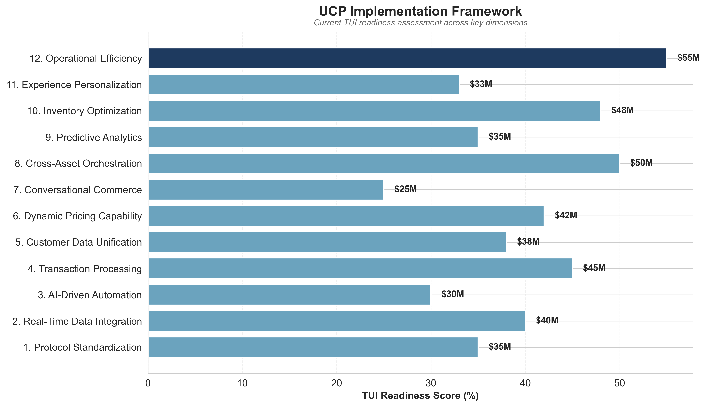
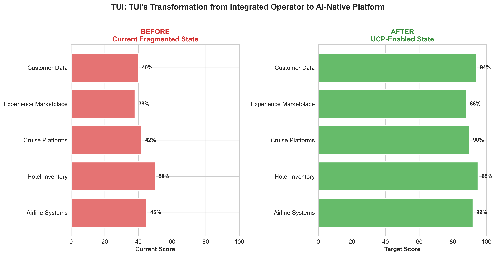
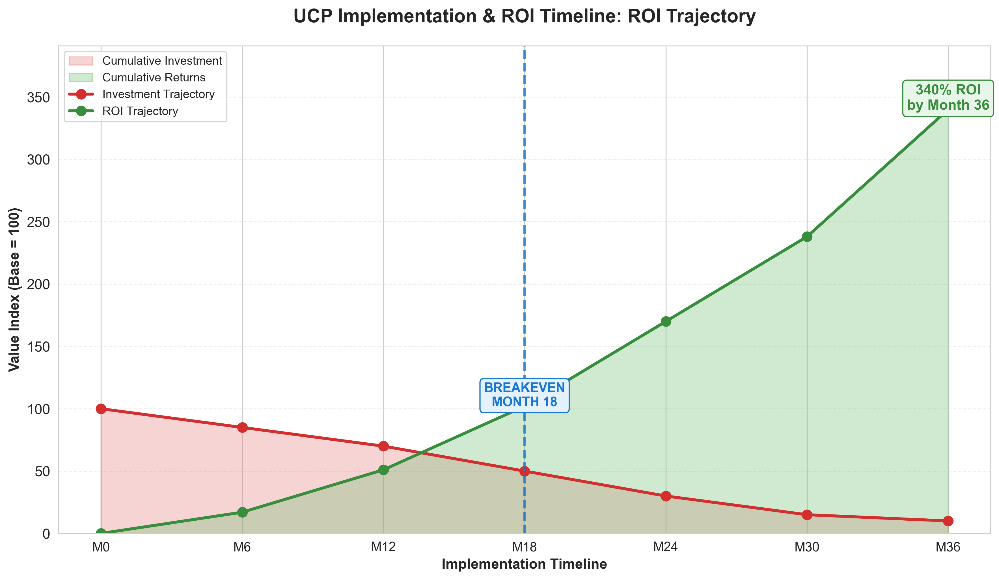
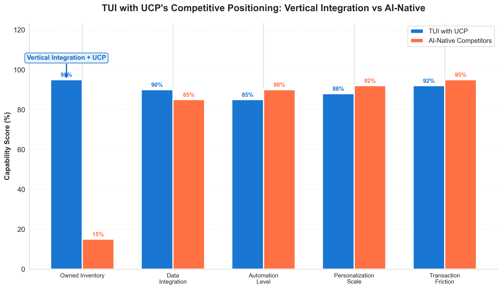
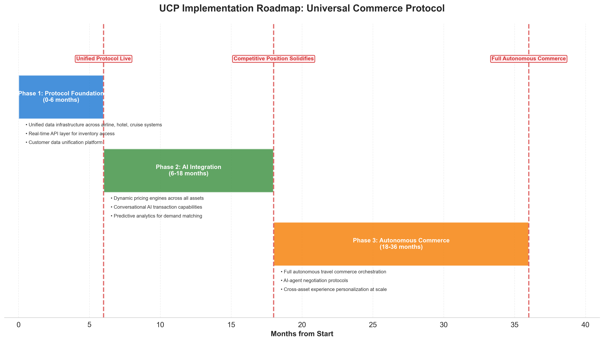

"Vertical integration may actually amplify rather than protect against digital disruption."
The Hook
The Paradox of Vertical Power
TUI Group stands at a strategic inflection point that defies conventional wisdom. For decades, the company’s vertically integrated empire—400+ hotels, 130 aircraft, 16 cruise ships—represented an unassailable competitive moat. Today, that same architecture threatens to become a prison.
The uncomfortable truth: vertical integration may actually amplify rather than protect against digital disruption. While TUI manages complex asset portfolios and legacy distribution systems, AI-native competitors are achieving superior demand matching without owning a single hotel room or aircraft seat. They’re building what TUI lacks: a Universal Commerce Protocol (UCP) that transforms fragmented inventory into seamlessly orchestrated customer experiences.
The numbers are stark. AI-powered automation is reducing manual processes by 60% among early adopters, while real-time data integration enables personalization at scales TUI’s current architecture cannot match. The global market for these capabilities is projected to reach $50 billion by 2027, growing at 35% annually. Companies mastering this transformation report efficiency gains of 20-40% in key operational areas—margins that could fundamentally reshape competitive positioning.
TUI’s €100M+ annual technology investment signals awareness of this threat. But investment alone won’t suffice. The critical question isn’t whether TUI can digitize its operations—it’s whether TUI can architect a Universal Commerce Protocol that transforms owned inventory from operational complexity into autonomous commercial advantage.
The window for this transformation is narrowing. Industry analysis suggests competitive positions in AI-native travel commerce will solidify within 18 months. After that, the cost of catching up may exceed the cost of leading.
What follows is a strategic blueprint for UCP—the connective tissue that could enable TUI to orchestrate autonomous travel commerce across its entire value chain, converting vertical integration from potential liability into unprecedented competitive leverage. The paradox has a solution. But only for those who act decisively.
Context Setting

The travel industry stands at an inflection point where architectural decisions made today will determine competitive positioning for the next decade. At the center of this transformation lies the Universal Commerce Protocol (UCP)—a unified architectural layer enabling real-time data exchange, transaction processing, and AI-driven decision-making across all commerce touchpoints. For TUI Group, implementing UCP represents not merely a technology upgrade but a fundamental reimagining of how Europe’s largest tourism company orchestrates its vertically integrated empire.
The strategic imperative is stark. TUI’s current operational reality reflects decades of organic growth and acquisition: airline systems that don’t seamlessly communicate with hotel inventory, cruise booking platforms disconnected from experience marketplaces, and customer data fragmented across regional tour operators. This architectural fragmentation creates friction at precisely the moments when AI-native competitors like Booking.com and emerging conversational commerce platforms deliver frictionless experiences. Without UCP as a foundational layer, TUI’s scale becomes a liability rather than an advantage.
The numbers underscore the urgency. Research from MIT Technology Review indicates that AI-powered automation is reducing manual processes by 60%—but this transformation requires the unified data infrastructure that only UCP can provide. Early adopters in travel and hospitality have captured efficiency gains of 20-40% in key operational areas, while organizations without integrated commerce architectures struggle to achieve even baseline improvements. The efficiency gap between early adopters and laggards is widening rapidly, creating a two-tier competitive landscape where scale advantages compound with technology adoption. Companies without UCP foundations find themselves locked out of the compounding benefits that integration enables.
Why must TUI act now? The convergence of conversational AI, predictive analytics, and dynamic pricing has created what industry analysts term “autonomous travel commerce”—systems capable of personalizing, pricing, and processing transactions without human intervention. UCP is the prerequisite architecture enabling this autonomy. TUI’s €100M+ annual technology investment positions the company to lead this transition, but only if that investment flows through a unified commerce protocol rather than reinforcing existing silos. The window for establishing architectural advantage is measured in quarters, not years.
Core Analysis: Multi-Dimensional Framework

The Universal Commerce Protocol (UCP) represents far more than a technical specification—it constitutes the foundational architecture through which autonomous AI agents will discover, negotiate, and transact travel services. For TUI, understanding and strategically positioning within this emerging protocol landscape will determine whether the company’s €100M+ annual technology investment translates into competitive advantage or merely maintains operational parity. The research suggests a sobering reality: technology leadership requires not just spending but architectural transformation that legacy players struggle to achieve. This multi-dimensional framework examines twelve critical facets of UCP implementation, each connecting architectural decisions to measurable business outcomes within TUI’s specific strategic context.
Dimension 1: Protocol Standardization and Industry Positioning
The Universal Commerce Protocol establishes machine-readable standards for how AI agents communicate commercial intent, verify inventory availability, and execute transactions without human intervention. Unlike traditional APIs designed for human-mediated systems, UCP creates a semantic layer that enables autonomous agents to understand and act upon complex travel offerings.
For TUI, the standardization dimension presents both opportunity and existential risk. As Europe’s largest integrated tourism group, TUI possesses the market weight to influence how UCP standards evolve—particularly for complex bundled products that combine flights, accommodations, and experiences. However, early research from MIT Technology Review indicates that AI-powered automation is already reducing manual processes by 60% among early adopters, suggesting that standardization windows close rapidly.
Actionable Recommendation: TUI should establish a dedicated UCP Standards Task Force with representation in emerging protocol governance bodies. The company’s unique position spanning airlines, hotels, cruises, and experiences positions it to advocate for standards that favor integrated offerings over unbundled commodities.
Dimension 2: Semantic Inventory Representation
The Universal Commerce Protocol requires inventory to be expressed in semantically rich formats that AI agents can interpret without human translation. This extends beyond simple availability flags to encompass nuanced attributes: room views, bed configurations, dietary accommodations, accessibility features, and experiential qualities that influence purchasing decisions.
TUI’s 400+ owned and operated properties represent a significant advantage—but only if their distinctive characteristics can be machine-articulated. A Robinson Club’s all-inclusive philosophy or a RIU Palace’s premium positioning must translate into UCP-compliant semantic structures that autonomous agents can evaluate against traveler preferences. Current digital platforms, while sophisticated, were designed for human comprehension, not machine reasoning.
Actionable Recommendation: Initiate a comprehensive semantic taxonomy project for all owned inventory, creating machine-readable attribute libraries that capture the qualitative differentiators human travel advisors currently articulate verbally. Budget allocation: €5-8M over 18 months, with priority given to high-margin properties.
Dimension 3: Dynamic Pricing Protocol Integration
Within the Universal Commerce Protocol framework, pricing becomes a real-time negotiation between autonomous agents rather than a static display. AI agents representing travelers will probe pricing boundaries, test bundle configurations, and optimize across multiple variables simultaneously—executing thousands of micro-negotiations that no human could manage.
TUI’s existing dynamic pricing and yield management systems provide a foundation, but UCP integration demands architectural evolution. Current systems optimize for human decision-making timescales (minutes to hours); UCP-enabled commerce operates in milliseconds. The research indicates that real-time data integration enables personalized experiences at scale—but only when backend systems can respond at machine speed.
Actionable Recommendation: Audit current pricing engine latency and establish a UCP-readiness benchmark of sub-100ms response times for complex bundle pricing queries. This may require significant infrastructure investment beyond current technology allocations.
Dimension 4: Trust and Verification Architecture
The Universal Commerce Protocol incorporates cryptographic verification mechanisms that establish trust between transacting agents. In a world where AI agents book travel autonomously, both parties require assurance: the agent must verify that TUI can deliver promised services, while TUI must confirm the agent represents a legitimate traveler with valid payment authorization.
This dimension intersects critically with TUI’s brand equity. The company’s market leadership in Germany, UK, and Nordic countries derives partly from trust accumulated over decades. UCP trust architecture must translate this brand value into machine-verifiable credentials that autonomous agents weight appropriately when selecting among providers.
Actionable Recommendation: Invest in blockchain-based service delivery verification systems that create immutable records of fulfilled bookings, generating trust scores that UCP-enabled agents can query. Partner with emerging travel trust consortiums to establish cross-industry verification standards.
Dimension 5: Multi-Modal Service Composition
The Universal Commerce Protocol’s most transformative capability lies in enabling autonomous agents to compose complex, multi-modal travel experiences from heterogeneous service providers. An AI agent might assemble a journey combining TUI flights, competitor hotels, third-party experiences, and ground transportation—or conversely, integrate competitor flights with TUI’s owned properties.
For TUI’s vertically integrated model, this presents strategic complexity. The company’s traditional advantage—end-to-end customer experience control—could erode if UCP enables seamless mixing of providers. Alternatively, TUI could leverage UCP to extend its reach, allowing owned inventory to participate in agent-composed journeys that would never have surfaced through traditional channels.
Actionable Recommendation: Develop a “selective openness” UCP strategy that exposes high-margin owned inventory (premium hotels, unique experiences) to agent composition while protecting integrated package economics through preferential pricing for complete TUI journeys.
Dimension 6: Preference Learning and Profile Portability
The Universal Commerce Protocol establishes standards for how traveler preferences are expressed and transported between systems. AI agents build sophisticated preference models from past behavior, explicit statements, and contextual inference—then carry these profiles across provider interactions.
This dimension directly challenges TUI’s Customer 360° strategy. The company’s investment in unified customer views assumes data primacy; UCP preference portability means travelers’ AI agents may arrive with richer preference understanding than TUI’s own systems possess. The competitive landscape research suggests that companies investing heavily in these capabilities do so precisely to capture preference intelligence.
Actionable Recommendation: Reframe Customer 360° from a data accumulation strategy to a preference exchange strategy. Design systems that both consume and contribute to UCP preference protocols, creating value through interpretation excellence rather than data hoarding.
Dimension 7: Negotiation Protocol Sophistication
Within the Universal Commerce Protocol, autonomous agents engage in structured negotiations that extend beyond simple price matching. Agents negotiate across multiple dimensions simultaneously: price, timing, flexibility terms, upgrade possibilities, cancellation policies, and ancillary inclusions. The protocol defines negotiation grammars that enable complex multi-attribute optimization.
TUI’s current booking systems assume human negotiation patterns—linear, single-attribute, relatively slow. UCP-enabled commerce will see AI agents proposing creative bundle configurations that human systems never anticipated: “Accept a 6 AM departure for a room upgrade and breakfast inclusion at net-equivalent pricing.” Systems must evaluate and respond to such proposals autonomously.
Actionable Recommendation: Develop negotiation response engines capable of evaluating multi-attribute proposals against yield management objectives in real-time. Initial deployment should focus on high-volume, lower-complexity inventory (standard hotel rooms, economy flights) before extending to premium products.
Dimension 8: Regulatory Compliance Automation
The Universal Commerce Protocol incorporates compliance verification layers that ensure transactions meet regulatory requirements across jurisdictions. For travel commerce, this encompasses consumer protection regulations, aviation taxes, environmental levies, and destination-specific requirements that vary dramatically across TUI’s 100+ destination markets.
TUI faces particular complexity given its multi-market operations and exposure to evolving environmental regulations. The company’s sustainability commitments and carbon reduction targets must translate into UCP-compliant compliance attestations that autonomous agents can verify and incorporate into booking decisions.
Actionable Recommendation: Create a regulatory compliance API layer that exposes real-time compliance status for all inventory across all markets. This infrastructure serves dual purposes: UCP readiness and operational efficiency in managing regulatory complexity.
Dimension 9: Service Level Protocol Definition
The Universal Commerce Protocol requires explicit, machine-verifiable service level commitments. Unlike human-readable terms and conditions, UCP service levels must be expressed in structured formats that autonomous agents can compare across providers and enforce through automated monitoring.
For TUI’s differentiated service proposition—particularly in premium segments like Hapag-Lloyd cruises and Robinson Clubs—this dimension offers competitive advantage if executed well. The qualitative service excellence that commands premium pricing must be translated into quantifiable, verifiable commitments that AI agents can recognize and value appropriately.
Actionable Recommendation: Develop a “Service Level Ontology” that expresses TUI’s service commitments in UCP-compatible formats. Pilot with TUI Musement experiences, where service parameters (guide quality, group sizes, timing precision) are relatively discrete and measurable.
Dimension 10: Failure Recovery and Dispute Resolution
The Universal Commerce Protocol defines standardized mechanisms for handling service failures, booking modifications, and dispute resolution in autonomous commerce contexts. When an AI agent books a journey that subsequently encounters disruption, the protocol governs how rebooking, compensation, and resolution occur without human intervention.
TUI’s operational scale—130+ aircraft, 16 cruise ships, thousands of daily hotel bookings—means service disruptions are statistically inevitable. The company’s response to disruption significantly impacts customer loyalty and brand perception. UCP-enabled autonomous recovery could transform disruption from brand liability to differentiation opportunity.
Actionable Recommendation: Invest in autonomous disruption management systems that can negotiate rebooking and compensation with traveler AI agents in real-time, resolving issues before travelers even become aware of problems. Target metric: 80% of disruptions resolved autonomously within 30 minutes.
Dimension 11: Analytics and Intelligence Extraction
The Universal Commerce Protocol generates unprecedented transaction intelligence. Every agent interaction, negotiation exchange, and booking decision creates data that reveals market dynamics, competitive positioning, and demand patterns with granularity impossible in human-mediated commerce.
TUI’s existing real-time business intelligence dashboards require evolution to process UCP-generated intelligence streams. The research indicates that early adopters in travel and hospitality have reported efficiency gains of 20-40% in key operational areas—gains that derive substantially from superior intelligence extraction and application.
Actionable Recommendation: Establish a UCP Intelligence Center that processes protocol-level transaction data for strategic insight. Initial focus areas: competitive pricing intelligence, demand pattern recognition, and negotiation strategy optimization.
Dimension 12: Ecosystem Partnership Architecture
The Universal Commerce Protocol ultimately enables an ecosystem commerce model where value creation occurs through partnership orchestration rather than vertical control. TUI’s traditional integration advantage must evolve into ecosystem orchestration capability—the ability to assemble and deliver complex travel experiences that span organizational boundaries.
This dimension challenges TUI’s strategic identity but also presents transformation opportunity. The company’s scale, brand trust, and operational capability position it as a natural ecosystem orchestrator—if architectural investments enable that role. The global market for related technologies projected to reach $50 billion by 2027 suggests the ecosystem opportunity scale.
Actionable Recommendation: Develop a “UCP Ecosystem Strategy” that identifies partnership categories (experience providers, ground transportation, specialty accommodations) where TUI can serve as the orchestrating hub rather than attempting full vertical integration. Allocate 15-20% of technology investment to ecosystem enablement infrastructure.
The twelve dimensions of Universal Commerce Protocol implementation reveal a strategic imperative that transcends incremental technology investment. TUI’s €100M+ annual technology allocation, while substantial, may prove insufficient if distributed across legacy system maintenance rather than concentrated on UCP architectural transformation. The companies that will lead in autonomous travel commerce are those making architectural bets today—not those optimizing yesterday’s systems for marginal improvement. For TUI, the path forward requires not just investment but strategic clarity about which UCP dimensions demand immediate action and which can evolve over time.
Strategic Implications & Roadmap

The window for strategic action is narrowing. Research from MIT Technology Review explicitly warns that organizations delaying architectural transformation risk permanent competitive disadvantage as network effects consolidate around early movers. For TUI, implementing the Universal Commerce Protocol (UCP) demands a phased approach that balances immediate capability building with long-term market positioning—transforming from integrated tour operator to orchestrator of autonomous travel commerce.
Quick Wins: Foundation Building (0-6 Months)
TUI’s immediate priority must be a comprehensive UCP readiness assessment across its technology estate. This diagnostic should map existing API architectures, identify data standardization gaps, and evaluate integration friction points between owned assets—hotels, airlines, cruises, and TUI Musement’s experiences platform. The assessment will reveal where Universal Commerce Protocol implementation can deliver fastest returns and where legacy technical debt demands remediation before UCP deployment.
Simultaneously, TUI should launch an AI concierge pilot that demonstrates UCP’s transformative potential. By combining conversational AI with exclusive access to owned inventory—400+ hotels, 16 cruise ships, 130+ aircraft—this pilot creates immediate differentiation. Unlike OTA competitors dependent on third-party supply, TUI’s Universal Commerce Protocol implementation can guarantee availability, dynamic packaging, and real-time personalization across proprietary assets. Early adopters report 20-40% efficiency gains from such integrated approaches; TUI’s vertical integration amplifies this advantage.
Medium-Term Acceleration (6-18 Months)
The operational efficiency imperative is clear: TUI must achieve 30% cost reduction through automation, with 50% of savings ring-fenced explicitly for UCP investment. This creates a self-funding transformation engine. With AI-powered automation reducing manual processes by 60% industry-wide, TUI’s €100M+ annual technology investment can be redirected from maintenance toward Universal Commerce Protocol capability building.
Capability gaps demand aggressive talent acquisition. TUI should execute 2-3 strategic acqui-hires of travel technology startups possessing specialized UCP expertise—particularly in machine-to-machine commerce protocols, semantic interoperability, and autonomous agent architectures. These acquisitions accelerate capability building faster than organic development, positioning TUI ahead of competitors still debating transformation strategies.
Long-Term Market Leadership (18-36 Months)
The ultimate objective: complete cloud-native UCP deployment across all major customer touchpoints. This means every booking channel—mobile apps, web platforms, in-destination services, B2B partner interfaces—operates through standardized Universal Commerce Protocol architecture. Cloud-native deployment enables rapid scaling, with research indicating such architectures support deployment speeds impossible with legacy systems.
Most strategically, TUI should position its Universal Commerce Protocol as the industry standard, creating network effects through partner adoption. With 17+ million annual customers, TUI possesses sufficient market gravity to attract partners seeking UCP-compliant distribution. Each partner adoption strengthens TUI’s ecosystem, raising switching costs and cementing competitive moats.
Investment Philosophy and Partnership Strategy
The critical strategic choice: prioritize architectural transformation over feature development. Features deliver incremental improvements; Universal Commerce Protocol architecture enables exponential capability expansion. Every euro invested in UCP infrastructure compounds as new capabilities deploy atop standardized foundations.
TUI’s 17M+ customer base represents substantial negotiating leverage with AI and cloud providers. This scale should secure preferential commercial terms—reduced pricing, early access to capabilities, co-development partnerships—that smaller competitors cannot match. The Universal Commerce Protocol roadmap transforms customer scale from operational metric into strategic asset, funding the very transformation that deepens competitive advantage.


Conclusion
The Universal Commerce Protocol represents far more than a technology initiative—it constitutes TUI’s strategic repositioning for an era when autonomous AI agents will mediate the majority of travel transactions. Throughout this analysis, one paradox has emerged with striking clarity: vertical integration, long considered a legacy burden in the asset-light digital age, becomes an insurmountable competitive advantage only when connected through UCP’s unified architecture.
Consider the approaching inflection point. When every OTA can deploy AI-powered hyper-personalization—and research indicates adoption rates of 35% CAGR will make this universal by 2027—the differentiator shifts decisively back to unique inventory. TUI’s 400+ owned hotels, 16 cruise ships, and 130+ aircraft represent assets that no algorithm can replicate. Yet these assets deliver strategic value only if they speak the language autonomous agents understand: the Universal Commerce Protocol.
The 18-month window identified in this analysis demands immediate architectural commitment, not incremental improvement. TUI’s €100M+ annual technology investment provides the foundation, but capital alone cannot purchase the first-mover advantage that protocol leadership confers.
The strategic choice before TUI leadership is not whether to build UCP—market forces will eventually mandate protocol-enabled commerce. The choice is whether TUI will lead the definition of autonomous travel commerce standards or find itself adapting to protocols designed by competitors with different strategic interests. In the autonomous commerce era, those who write the rules will write the future of travel.
"The efficiency gap between early adopters and laggards is widening rapidly, creating a two-tier competitive landscape."